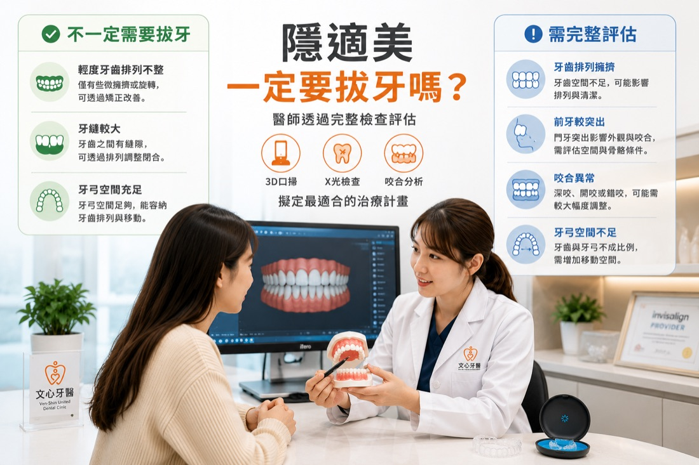
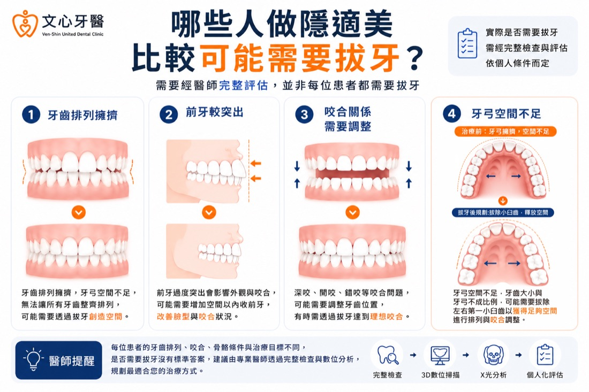
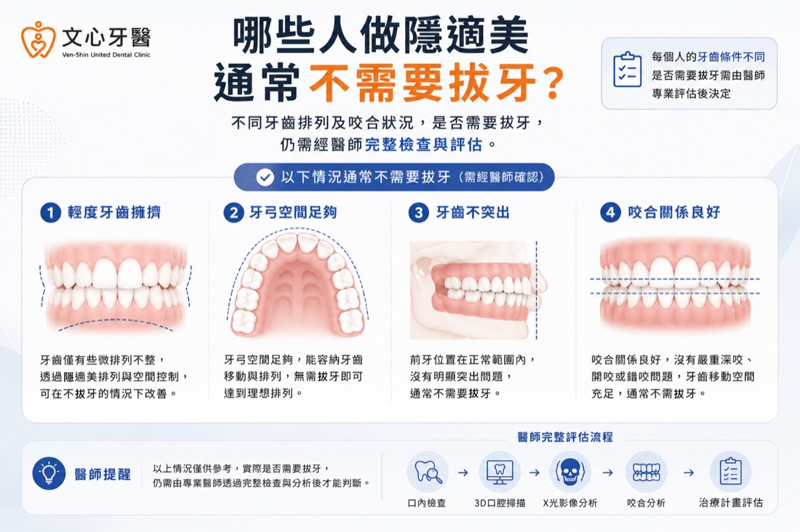
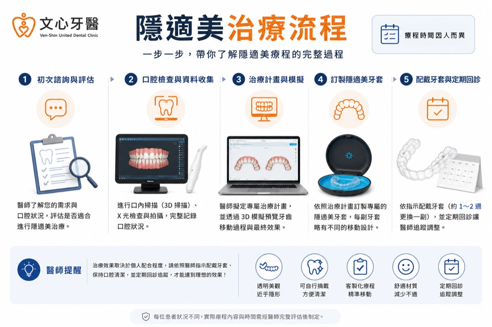

前言
「醫師，我做隱適美一定要拔牙嗎？」
這是不少準備開始隱適美的患者第一次來文心牙醫諮詢隱形矯正時，最先提出的問題。有些人甚至因為害怕拔牙，明明已經在意牙齒排列很久，卻遲遲不敢開始評估。
不過，做隱適美並不代表一定要拔牙。
臨床上，不少第一次來諮詢的朋友只是輕度排列不整，牙弓仍有足夠空間，治療計畫中不一定需要安排拔牙；但也有些患者看起來牙齒沒有特別凌亂，實際檢查後卻發現牙弓空間不足、前牙較突出，或咬合關係需要進一步調整。
因此，是否需要拔牙，不能只看牙齒表面整不整齊，也不能直接套用朋友或網路上的治療經驗。
醫師通常會綜合評估牙齒排列、牙弓空間、上下顎咬合關係、臉型比例及治療目標，並搭配 3D 口腔掃描、全口 X 光、側顱 X 光與臨床檢查，才能判斷較合適的治療方向。
這篇文章會帶您了解：哪些情況比較可能需要拔牙、哪些情況通常不需要，以及醫師在隱適美諮詢時會如何進行評估。
✅ 並不是每位使用隱形牙套治療的患者都需要拔牙。
✅ 是否需要拔牙，主要取決於牙齒排列、咬合關係及牙弓空間。
✅ 部分患者可透過其他方式增加牙齒排列空間，不一定需要拔牙。
✅ 是否需要拔牙，仍需由醫師根據口腔檢查結果及整體治療規劃進行評估。
我的回答通常都是：「不一定。」
不過，真正的答案沒有這麼簡單。
在文心牙醫的諮詢過程中，我們常遇到患者一坐下就問：
「醫師，我朋友做隱適美沒有拔牙，我是不是也不用？」
其實，每位患者的牙齒排列、牙弓空間、上下顎咬合及治療目標都不同，因此即使外觀看起來相似，適合的治療方式也可能完全不同。
醫師評估是否需要拔牙，目的並不是「為了拔牙而拔牙」，而是希望在牙齒移動的過程中，有足夠的空間完成排列，同時兼顧咬合穩定性、牙齒功能及整體治療效果。
例如，有些患者只是牙齒輕度排列不整，或牙弓仍保有足夠空間，完成口腔評估後，不一定需要拔牙即可完成矯正；但若牙齒排列擁擠、牙弓空間不足，或需要較大幅度調整咬合，醫師便可能進一步評估是否需要增加牙齒移動空間。
因此，是否需要拔牙沒有固定答案，而是需要由矯正醫師根據口內檢查、影像資料及整體治療規劃綜合判斷。一般而言，醫師會綜合以下資料進行評估：
因此，「是否需要拔牙」沒有固定答案，每位患者都應依照個人口腔條件，由醫師進行完整評估。
但臨床上，即使兩個人的牙齒看起來都很整齊，實際檢查後仍可能因為牙弓空間、骨骼條件或咬合狀況不同，而有完全不同的治療規劃。
因此，與其比較別人的治療方式，更重要的是了解自己的口腔狀況，再由醫師提供適合的建議。
需要特別說明的是，「可能需要拔牙」並不代表一定會拔牙，醫師仍會依照檢查結果，選擇最適合患者的治療規劃。
以下整理幾種臨床上較常見的評估情況。
當牙弓空間不足，每顆牙齒都沒有足夠的位置排列時，就可能出現牙齒重疊、旋轉、排列凌亂或清潔不易等情況。
若希望改善牙齒排列，同時兼顧咬合與治療穩定性，醫師可能會評估是否需要增加牙齒移動空間。
不過，如果只是輕度擁擠，也可能透過其他治療方式增加空間，因此並不是所有牙齒擁擠都一定需要拔牙。
前牙突出除了可能影響外觀，也可能因上下牙齒的位置關係，影響咬合功能。
若希望改善牙齒排列及前牙突出程度，醫師可能會依據牙弓空間及骨骼條件，評估是否需要增加牙齒移動空間。
但仍要再次提醒，並不是所有前牙突出都需要拔牙。
每位患者的骨骼條件、牙齒大小及治療目標不同，因此適合的矯正方式也可能不同。
若患者有深咬、開咬、錯咬或其他較複雜的咬合問題，醫師在規劃治療時，除了考量牙齒排列，也需要評估上下顎牙齒的位置關係。
若需要較大的牙齒移動空間，醫師可能會將拔牙列入整體治療規劃的一部分。
若牙齒尺寸與牙弓空間不成比例，即使牙齒沒有明顯凌亂，也可能因空間不足而影響後續排列。
醫師通常會透過 3D 口腔掃描及 X 光分析牙弓空間，再判斷是否需要增加排列空間，以及採用哪一種治療方式較適合。
因此，牙弓空間不足並不代表一定需要拔牙，而是醫師規劃療程時的重要評估項目之一。
有些患者雖然牙齒排列較擁擠，但牙弓仍有足夠空間；也有些患者外觀看起來不明顯，卻因咬合關係需要更完整的治療規劃。
因此，並不是牙齒越亂，就代表越需要拔牙。
有些患者雖然牙齒排列較擁擠，但經完整評估後，仍可能透過其他方式增加牙齒排列空間，因此是否需要拔牙仍須由醫師判斷。
拔牙只是矯正治療規劃中的其中一種方式，是否採用主要取決於牙齒排列、咬合及空間需求，而不是代表牙齒狀況較嚴重。
👉 若想了解兩者的差異，可延伸閱讀：
《隱適美 vs 傳統牙套差在哪？優、缺點價格一次比較》
提醒： 以上為示意情境，實際治療規劃仍需依每位患者的口腔狀況及醫師評估結果而定。
是否需要拔牙，仍須依據牙齒排列、牙弓空間、咬合關係及整體治療目標綜合評估，而不是單純依照外觀判斷。
以下整理幾種臨床上較常見、不一定需要拔牙的情況。
每位患者的牙齒大小及排列方式不同，因此仍需經醫師評估，才能確認適合的治療方式。
這類情況通常會先評估如何透過牙齒移動調整牙縫與咬合，因此未必需要拔牙。
因此，「牙弓空間是否足夠」往往比「牙齒是否整齊」更重要。
若經醫師評估適合，部分就診者可透過其他方式增加牙齒排列空間，而不一定需要拔牙。
實際治療方式仍會依照口腔檢查、影像分析及整體治療規劃決定。
如果對是否需要拔牙有疑問，建議安排專業諮詢，透過口內檢查、3D 口腔掃描及 X 光評估，才能更了解自己的狀況。
※不同牙齒排列及咬合狀況是否需要拔牙，仍需經醫師完整檢查與評估。
其實，單靠肉眼觀察，無法準確判斷是否需要拔牙。
醫師通常會透過完整的口腔檢查與數位影像分析，了解牙齒排列、牙根位置、骨骼條件、牙弓空間及咬合關係後，再制定治療計畫。
一般評估流程如下：
透過上述檢查，醫師才能更完整地了解患者的口腔條件，並與患者討論不同治療方案。
了解完整檢查流程後，會更容易理解醫師為什麼不能只憑肉眼，就判斷是否需要拔牙。
如需更深入了解《第一次諮詢隱適美會做什麼？一定要 3D 口掃、拍 X 光嗎？》
其實，隨著數位矯正技術及治療規劃方式的進步，部分患者經完整評估後，可能有其他增加牙齒排列空間的方式。
需要注意的是，每位患者的牙齒排列、牙弓空間、牙周健康及治療目標都不同，因此是否適合採用以下方式，仍需由醫師依照完整檢查結果評估。
是否適合進行 IPR，仍需考量牙齒健康、琺瑯質厚度及整體治療計畫，因此並非每位患者都適用。
醫師會依照患者的牙齒排列、牙弓空間及咬合狀況，規劃適合的牙齒移動方式。
完成 3D 口腔掃描及 X 光分析後，醫師可依據牙弓空間及整體治療目標，規劃適合的矯正方式。
是否適合採用其他增加空間的方式，仍需依照牙齒排列、牙周健康及整體治療規劃，由醫師綜合評估，而不是單看一項條件就能決定。
重點整理
重點提醒：在文心牙醫，第一次隱適美諮詢會先安排口內檢查、3D 口腔掃描及必要影像檢查，再由醫師依照患者的口腔狀況說明是否需要拔牙，以及後續的治療方向。
👉 第一次諮詢隱適美會做什麼？一定要 3D 口掃、拍 X 光嗎？
了解第一次看診通常會進行哪些檢查，以及醫師如何規劃治療方向。
👉 隱適美 vs 傳統牙套差在哪？優缺點、價格一次比較
比較不同矯正方式的特色、配戴體驗及適合族群。
👉 台南隱適美價格為什麼差這麼多？醫師解析費用差異
了解影響隱適美療程費用的常見因素，以及諮詢前可以先了解的重點。
醫師會依照牙齒排列、牙弓空間、咬合關係、牙周健康及整體治療目標，綜合口內檢查、3D口掃及X光資料後進行綜合評估，再與患者討論適合的治療方式。
如果您正在考慮隱適美，不妨先安排專業諮詢，透過 3D 口腔掃描、全口 X 光、側顱 X 光及臨床檢查，了解目前的口腔狀況，再與醫師共同討論適合自己的矯正規劃。
「醫師，我做隱適美一定要拔牙嗎？」
這是不少準備開始隱適美的患者第一次來文心牙醫諮詢隱形矯正時，最先提出的問題。有些人甚至因為害怕拔牙，明明已經在意牙齒排列很久，卻遲遲不敢開始評估。
不過，做隱適美並不代表一定要拔牙。
臨床上，不少第一次來諮詢的朋友只是輕度排列不整，牙弓仍有足夠空間，治療計畫中不一定需要安排拔牙；但也有些患者看起來牙齒沒有特別凌亂，實際檢查後卻發現牙弓空間不足、前牙較突出，或咬合關係需要進一步調整。
因此，是否需要拔牙，不能只看牙齒表面整不整齊，也不能直接套用朋友或網路上的治療經驗。
醫師通常會綜合評估牙齒排列、牙弓空間、上下顎咬合關係、臉型比例及治療目標，並搭配 3D 口腔掃描、全口 X 光、側顱 X 光與臨床檢查，才能判斷較合適的治療方向。
這篇文章會帶您了解：哪些情況比較可能需要拔牙、哪些情況通常不需要，以及醫師在隱適美諮詢時會如何進行評估。
本文重點
閱讀本文前，可以先掌握以下四個重點：✅ 並不是每位使用隱形牙套治療的患者都需要拔牙。
✅ 是否需要拔牙，主要取決於牙齒排列、咬合關係及牙弓空間。
✅ 部分患者可透過其他方式增加牙齒排列空間，不一定需要拔牙。
✅ 是否需要拔牙，仍需由醫師根據口腔檢查結果及整體治療規劃進行評估。
隱適美一定要拔牙嗎？
如果第一次來諮詢的患者直接問我：「醫師，我需要拔牙嗎？」我的回答通常都是：「不一定。」
不過，真正的答案沒有這麼簡單。
在文心牙醫的諮詢過程中，我們常遇到患者一坐下就問：
「醫師，我朋友做隱適美沒有拔牙，我是不是也不用？」
其實，每位患者的牙齒排列、牙弓空間、上下顎咬合及治療目標都不同，因此即使外觀看起來相似，適合的治療方式也可能完全不同。
醫師評估是否需要拔牙，目的並不是「為了拔牙而拔牙」，而是希望在牙齒移動的過程中，有足夠的空間完成排列，同時兼顧咬合穩定性、牙齒功能及整體治療效果。
例如，有些患者只是牙齒輕度排列不整，或牙弓仍保有足夠空間，完成口腔評估後，不一定需要拔牙即可完成矯正；但若牙齒排列擁擠、牙弓空間不足，或需要較大幅度調整咬合，醫師便可能進一步評估是否需要增加牙齒移動空間。
因此，是否需要拔牙沒有固定答案，而是需要由矯正醫師根據口內檢查、影像資料及整體治療規劃綜合判斷。一般而言，醫師會綜合以下資料進行評估：
- 口內臨床檢查
- 3D 口腔掃描
- 全口 X 光
- 側顱 X 光
- 咬合分析
- 牙周健康評估
因此，「是否需要拔牙」沒有固定答案，每位患者都應依照個人口腔條件，由醫師進行完整評估。
👨⚕️ 醫師提醒
在文心牙醫，我們常遇到不少第一次來諮詢的患者，會拿親友的治療經驗來比較。但臨床上，即使兩個人的牙齒看起來都很整齊，實際檢查後仍可能因為牙弓空間、骨骼條件或咬合狀況不同，而有完全不同的治療規劃。
因此，與其比較別人的治療方式，更重要的是了解自己的口腔狀況，再由醫師提供適合的建議。

※醫師透過 3D 口腔掃描、X 光及咬合分析，評估隱適美治療是否需要拔牙。
哪些人做隱適美比較可能需要拔牙？
雖然不是每位患者都需要拔牙，但如果牙齒排列空間不足，或希望改善較複雜的咬合問題，醫師可能會進一步評估是否需要透過拔牙增加牙齒移動空間。需要特別說明的是，「可能需要拔牙」並不代表一定會拔牙，醫師仍會依照檢查結果，選擇最適合患者的治療規劃。
以下整理幾種臨床上較常見的評估情況。
一、牙齒排列過於擁擠
牙齒擁擠，是醫師評估是否需要拔牙最常見的原因之一。當牙弓空間不足，每顆牙齒都沒有足夠的位置排列時，就可能出現牙齒重疊、旋轉、排列凌亂或清潔不易等情況。
若希望改善牙齒排列，同時兼顧咬合與治療穩定性，醫師可能會評估是否需要增加牙齒移動空間。
不過，如果只是輕度擁擠，也可能透過其他治療方式增加空間，因此並不是所有牙齒擁擠都一定需要拔牙。
二、前牙較突出
有些患者主要困擾並非牙齒凌亂，而是前牙較突出。前牙突出除了可能影響外觀，也可能因上下牙齒的位置關係，影響咬合功能。
若希望改善牙齒排列及前牙突出程度，醫師可能會依據牙弓空間及骨骼條件，評估是否需要增加牙齒移動空間。
但仍要再次提醒，並不是所有前牙突出都需要拔牙。
每位患者的骨骼條件、牙齒大小及治療目標不同，因此適合的矯正方式也可能不同。
三、咬合關係需要較大幅度調整
牙齒矯正除了讓牙齒排列整齊之外，更重要的是建立穩定的咬合關係。若患者有深咬、開咬、錯咬或其他較複雜的咬合問題，醫師在規劃治療時，除了考量牙齒排列，也需要評估上下顎牙齒的位置關係。
若需要較大的牙齒移動空間，醫師可能會將拔牙列入整體治療規劃的一部分。
四、牙弓空間不足
每位患者的牙弓大小都不同。若牙齒尺寸與牙弓空間不成比例，即使牙齒沒有明顯凌亂，也可能因空間不足而影響後續排列。
醫師通常會透過 3D 口腔掃描及 X 光分析牙弓空間，再判斷是否需要增加排列空間，以及採用哪一種治療方式較適合。
因此，牙弓空間不足並不代表一定需要拔牙，而是醫師規劃療程時的重要評估項目之一。
👨⚕️ 醫師提醒
牙齒擁擠只是醫師評估的其中一項因素。有些患者雖然牙齒排列較擁擠，但牙弓仍有足夠空間；也有些患者外觀看起來不明顯，卻因咬合關係需要更完整的治療規劃。
因此，並不是牙齒越亂，就代表越需要拔牙。
📌 常見迷思
迷思一：牙齒很亂就一定要拔牙？
不一定。有些患者雖然牙齒排列較擁擠，但經完整評估後，仍可能透過其他方式增加牙齒排列空間，因此是否需要拔牙仍須由醫師判斷。
迷思二：拔牙代表牙齒狀況比較嚴重嗎？
不一定。拔牙只是矯正治療規劃中的其中一種方式，是否採用主要取決於牙齒排列、咬合及空間需求，而不是代表牙齒狀況較嚴重。
迷思三：隱適美是不是比傳統牙套更容易不用拔牙？
隱適美與傳統牙套都是牙齒矯正方式，是否需要拔牙仍需依患者的口腔條件及治療規劃決定，而非單純取決於使用哪一種矯正方式。👉 若想了解兩者的差異，可延伸閱讀：
《隱適美 vs 傳統牙套差在哪？優、缺點價格一次比較》
🦷 患者情境參考
情境 A：輕度牙齒擁擠
一位 27 歲上班族因前牙稍微排列不整前來諮詢。完成 3D 口腔掃描及 X 光檢查後，醫師評估牙弓空間仍足夠，因此規劃透過矯正治療改善排列，未將拔牙列入治療計畫。情境 B：牙弓空間不足
另一位患者因牙齒排列擁擠且牙弓空間不足，希望改善排列與咬合。經臨床判斷後，醫師向患者說明不同治療方案，並依照檢查結果討論是否需要增加牙齒移動空間。提醒： 以上為示意情境，實際治療規劃仍需依每位患者的口腔狀況及醫師評估結果而定。

※常見需要進一步評估是否拔牙的情況，包括牙齒排列擁擠、前牙突出、咬合異常及牙弓空間不足。
哪些人通常不需要拔牙？
雖然不少就診者在諮詢前都擔心需要拔牙，但實際上，有相當一部分患者完成依照口腔狀況評估，並不需要透過拔牙即可規劃隱適美療程。是否需要拔牙，仍須依據牙齒排列、牙弓空間、咬合關係及整體治療目標綜合評估，而不是單純依照外觀判斷。
以下整理幾種臨床上較常見、不一定需要拔牙的情況。
一、牙齒只有輕度排列不整
若牙齒只有些微重疊、輕微旋轉或排列不整，且牙弓空間足夠，醫師通常會先評估是否能透過矯正治療改善，而不一定需要拔牙。每位患者的牙齒大小及排列方式不同，因此仍需經醫師評估，才能確認適合的治療方式。
二、牙齒有縫隙
部分患者並不是牙齒太擠，而是牙齒之間存在空隙。這類情況通常會先評估如何透過牙齒移動調整牙縫與咬合，因此未必需要拔牙。
三、牙弓空間充足
如果牙弓空間足夠，即使牙齒排列略有不整，也可能透過適當的矯正規劃改善。因此，「牙弓空間是否足夠」往往比「牙齒是否整齊」更重要。
四、可透過其他方式增加排列空間
現今牙齒矯正規劃已較以往更為多元。若經醫師評估適合，部分就診者可透過其他方式增加牙齒排列空間，而不一定需要拔牙。
實際治療方式仍會依照口腔檢查、影像分析及整體治療規劃決定。
👨⚕️ 醫師提醒
網路上的分享可以作為參考，但每個人的口腔條件不同，不建議直接套用他人的經驗。如果對是否需要拔牙有疑問，建議安排專業諮詢，透過口內檢查、3D 口腔掃描及 X 光評估，才能更了解自己的狀況。

※不同牙齒排列及咬合狀況是否需要拔牙，仍需經醫師完整檢查與評估。
醫師如何判斷是否需要拔牙？
許多患者第一次諮詢時都會直接詢問：「醫師，你現在看一下，我需要拔牙嗎？」其實，單靠肉眼觀察，無法準確判斷是否需要拔牙。
醫師通常會透過完整的口腔檢查與數位影像分析，了解牙齒排列、牙根位置、骨骼條件、牙弓空間及咬合關係後，再制定治療計畫。
一般評估流程如下：
| 評估項目 | 檢查目的 |
|---|---|
| 口內臨床檢查 | 了解牙齒排列、牙周健康及口腔狀況 |
| 3D 口腔掃描 | 分析牙齒排列與牙弓空間 |
| 全口 X 光 | 觀察牙根、齒槽骨及智齒位置 |
| 側顱 X 光 | 評估上下顎骨骼與咬合關係 |
| 咬合分析 | 規劃牙齒移動方向及治療方式 |
📌 評估流程
第一次諮詢→口內檢查→3D 口腔掃描→全口 X 光／側顱 X 光→咬合分析→評估是否需要拔牙→討論治療計畫→開始矯正療程👨⚕️ 醫師提醒
如果您還沒有閱讀上一篇「第一次諮詢隱適美會做什麼？一定要 3D 口掃、拍 X 光嗎？」建議可以先閱讀。了解完整檢查流程後，會更容易理解醫師為什麼不能只憑肉眼，就判斷是否需要拔牙。
如需更深入了解《第一次諮詢隱適美會做什麼？一定要 3D 口掃、拍 X 光嗎？》

※隱適美治療前，醫師透過口內檢查、3D 口腔掃描、X 光及咬合分析，評估是否需要拔牙。
如果不拔牙，還有哪些方式可以增加牙齒排列空間？
不少患者聽到「空間不足」時，第一個反應就是：「是不是只能拔牙？」其實，隨著數位矯正技術及治療規劃方式的進步，部分患者經完整評估後，可能有其他增加牙齒排列空間的方式。
需要注意的是，每位患者的牙齒排列、牙弓空間、牙周健康及治療目標都不同，因此是否適合採用以下方式，仍需由醫師依照完整檢查結果評估。
一、鄰接面修磨（IPR）
鄰接面修磨（Interproximal Reduction，簡稱 IPR），是指依照治療規劃，在牙齒鄰接面進行適當修整，以增加少量排列空間。是否適合進行 IPR，仍需考量牙齒健康、琺瑯質厚度及整體治療計畫，因此並非每位患者都適用。
二、調整牙齒移動規劃
有些患者並非完全沒有空間，而是透過完整的矯正規劃，讓牙齒依照適當方向移動，即有機會改善排列及咬合。醫師會依照患者的牙齒排列、牙弓空間及咬合狀況，規劃適合的牙齒移動方式。
三、依牙弓空間制定治療方式
部分患者雖然牙齒排列較擁擠，但牙弓仍具有一定的調整空間。完成 3D 口腔掃描及 X 光分析後，醫師可依據牙弓空間及整體治療目標，規劃適合的矯正方式。
👨⚕️ 醫師提醒
看到「不用拔牙也能完成矯正」這類資訊時，不妨先了解背後的治療條件。是否適合採用其他增加空間的方式，仍需依照牙齒排列、牙周健康及整體治療規劃，由醫師綜合評估，而不是單看一項條件就能決定。
| 常見情況 | 是否一定需要拔牙？ |
|---|---|
| 輕度牙齒排列不整 | 不一定 |
| 前牙較突出 | 視口腔條件評估 |
| 牙齒排列擁擠 | 視空間不足程度評估 |
| 咬合異常 | 視治療規劃評估 |
| 牙弓空間不足 | 視完整檢查結果評估 |
常見問題（FAQ）
Q1：做隱適美一定要拔牙嗎？
不一定。是否需要拔牙，主要與牙齒排列、牙弓空間、咬合關係及整體治療規劃有關，需由醫師完成檢查後評估。Q2：牙齒很亂就一定要拔牙嗎？
不一定。部分患者雖然牙齒排列較擁擠，但仍可能透過其他方式增加排列空間，因此實際治療方式仍需依照檢查結果規劃。Q3：前牙較突出一定需要拔牙嗎？
不一定。是否需要拔牙，需依骨骼條件、牙弓空間、咬合及整體治療目標綜合評估。Q4：每位患者都需要拔智齒嗎？
不一定。智齒是否需要處理，需依智齒位置、是否影響矯正規劃及口腔狀況，由醫師評估。Q5：拔牙後多久可以開始戴隱適美？
每位患者的恢復狀況不同，實際開始時間仍需依傷口恢復及醫師評估安排。Q6：如果不想拔牙，可以直接做隱適美嗎？
是否能不拔牙完成矯正，需依牙齒排列、咬合及牙弓空間評估。有些患者可透過其他方式增加排列空間，但仍需由醫師規劃適合的治療方式。Q7：第一次諮詢就會知道需不需要拔牙嗎？
通常在完成口內檢查、3D 口腔掃描及 X 光等檢查後，醫師會依檢查結果與患者討論治療方向及是否需要拔牙。Q8：隱適美拔牙後還能正常生活嗎？
多數患者仍可依照醫師建議安排日常生活及後續療程，如有任何疑問或不適，應與醫師討論並依照醫囑照護。延伸閱讀
如果您正在了解隱適美療程，建議也可以閱讀以下文章，建立更完整的矯正觀念：👉 第一次諮詢隱適美會做什麼？一定要 3D 口掃、拍 X 光嗎？
了解第一次看診通常會進行哪些檢查，以及醫師如何規劃治療方向。
比較不同矯正方式的特色、配戴體驗及適合族群。
👉 台南隱適美價格為什麼差這麼多？醫師解析費用差異
了解影響隱適美療程費用的常見因素，以及諮詢前可以先了解的重點。
結語
是否需要拔牙，沒有一套適用於所有患者的標準答案。醫師會依照牙齒排列、牙弓空間、咬合關係、牙周健康及整體治療目標，綜合口內檢查、3D口掃及X光資料後進行綜合評估，再與患者討論適合的治療方式。
如果您正在考慮隱適美，不妨先安排專業諮詢，透過 3D 口腔掃描、全口 X 光、側顱 X 光及臨床檢查，了解目前的口腔狀況，再與醫師共同討論適合自己的矯正規劃。